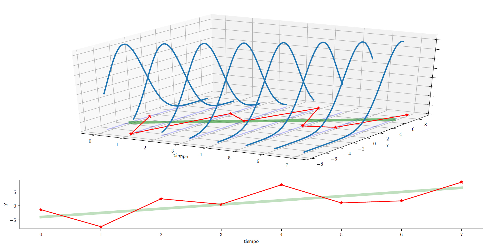

3.5. Introducción¶
¿Qué es una serie de tiempo?¶
Una serie de tiempo \(\{y_t\}_{t=1}^T\) es una realización de un proceso estocástico.
¿Qué nos gustaría hacer con esta serie de tiempo?¶
Imaginemos a la serie de tiempo como la parte de un proceso estocástico para la cual ya tenemos las realizaciones del proceso (un valor por período)
Nos gustaría saber la distribución condicional
Esto nos permitiría utilizar nuestra serie de tiempo para pronosticar valores futuros de la serie, así como precisar su variabilidad:
Nuestra tarea¶
En la práctica, puede ser que nunca conozcamos el verdadero proceso generador de datos (PGD) (el proceso estocástico del cual fueron obtenidos los valores de nuestra serie de tiempo).
Nuestra tarea es desarrollar modelos que capturen la esencia del verdadero PGD.
Las ecuaciones en diferencia estocásticas son una manera muy conveniente de modelar procesos económicos dinámicos.
Suponga que la meta de oferta monetaria \(M^*\) del banco central crece 100g% por año:
o en términos logarítmicos, con \(m^*\equiv \log\left(M^*\right)\)
Para una condición inicial \(m_0^*\) dada, la solución es:
La cantidad efectiva de dinero \(m_t\) puede diferir de la meta \(m_t^*\).
El banco central intenta cerrar una proporción \(\rho\) de la brecha entre la meta y la cantidad efectiva del período anterior. El cambio en la oferta de dinero es:
por lo que la oferta de dinero es
Aunque la oferta monetaria es una variable continua, nuestro modelo es una ecuación en diferencia (discreta).
Como las perturbaciones \(\left\{\epsilon_t\right\}\) son aleatorias, la oferta de dinero es estocástica.
Si supiéramos la distribución de \(\left\{\epsilon_t\right\}\), podríamos calcular la distribución de cada elemento de \(\left\{m_t\right\}\), porque está determinada completamente por los parámetros de la ecuación y por la secuencia \(\left\{\epsilon_t\right\}\).
Habiendo observado las primeras \(T\) observaciones de la serie \(\left\{m_t\right\}\), podríamos pronosticar futuros valores. Por ejemplo:
Ruido blanco y el modelo clásico de regresión lineal¶
En el MCRL se asume que
donde para todas las observaciones \(t=1,2,\dots,T\) el término de error cumple que:
Es decir, el MCRL aplicado a series de tiempo asume que el error es un proceso de ruido blanco.
Sin embargo, en la práctica rara vez se satisface ese supuesto cuando se ajusta un modelo de regresión lineal a datos de series de tiempo.
Consideremos la demanda de dinero en Costa Rica
la cual estimamos con datos mensuales (1991m01 a 2020m01) del medio circulante \(M_t\), el IMAE \(q_t\), el IPC \(p_t\), y la tasa básica pasiva \(i_t\).
import bccr
import numpy as np
import matplotlib.pyplot as plt
plt.style.use('seaborn')
import matplotlib.gridspec as gridspec
import statsmodels.api as sm
from statsmodels.formula.api import ols
datos = bccr.SW(IMAE=35449, IPC=25482, M1=1445, Tbasica=423, func=np.mean, fillna='ffill').dropna()
datos.tail()
| IMAE | IPC | M1 | Tbasica | |
|---|---|---|---|---|
| fecha | ||||
| 2020-07-31 | 110.987099 | 106.127077 | 5.166828e+06 | 3.708065 |
| 2020-08-31 | 110.584336 | 106.122788 | 5.206881e+06 | 3.635484 |
| 2020-09-30 | 113.705524 | 106.411930 | 5.206211e+06 | 3.498333 |
| 2020-10-31 | 118.613059 | 106.496597 | 5.061595e+06 | 3.293548 |
| 2020-11-30 | 120.969090 | 106.498184 | 4.913216e+06 | 3.346667 |
res = ols('M1 ~ IMAE + IPC + Tbasica', data=np.log(datos)).fit()
res.summary()
| Dep. Variable: | M1 | R-squared: | 0.994 |
|---|---|---|---|
| Model: | OLS | Adj. R-squared: | 0.994 |
| Method: | Least Squares | F-statistic: | 1.944e+04 |
| Date: | Sun, 04 Apr 2021 | Prob (F-statistic): | 0.00 |
| Time: | 22:17:32 | Log-Likelihood: | 335.36 |
| No. Observations: | 359 | AIC: | -662.7 |
| Df Residuals: | 355 | BIC: | -647.2 |
| Df Model: | 3 | ||
| Covariance Type: | nonrobust |
| coef | std err | t | P>|t| | [0.025 | 0.975] | |
|---|---|---|---|---|---|---|
| Intercept | 6.3294 | 0.298 | 21.263 | 0.000 | 5.744 | 6.915 |
| IMAE | 1.0242 | 0.079 | 13.044 | 0.000 | 0.870 | 1.179 |
| IPC | 0.9268 | 0.028 | 33.508 | 0.000 | 0.872 | 0.981 |
| Tbasica | -0.3519 | 0.022 | -15.919 | 0.000 | -0.395 | -0.308 |
| Omnibus: | 115.244 | Durbin-Watson: | 0.450 |
|---|---|---|---|
| Prob(Omnibus): | 0.000 | Jarque-Bera (JB): | 463.868 |
| Skew: | 1.349 | Prob(JB): | 1.87e-101 |
| Kurtosis: | 7.872 | Cond. No. | 390. |
Notes:
[1] Standard Errors assume that the covariance matrix of the errors is correctly specified.
No obstante, los residuos de la regresión no parecen ruido blanco.
fig = plt.figure(figsize=[10,5], tight_layout=True)
gs = gridspec.GridSpec(2, 2)
ax = fig.add_subplot(gs[0, :])
axs0 = fig.add_subplot(gs[1,0])
axs1 = fig.add_subplot(gs[1,1], sharey=axs0)
res.resid.plot(title='Residuos de la regresión', ax=ax)
OPCIONES = dict(lags=48, alpha=0.05, )
sm.graphics.tsa.plot_acf(res.resid, ax=axs0, title='Autocorrelación',**OPCIONES);
sm.graphics.tsa.plot_pacf(res.resid, ax=axs1, title='Autocorrelación parcial', **OPCIONES);
axs0.set_xticks([0,12,24,36,48])
axs1.set_xticks([0,12,24,36,48]);
Conocer el valor de un residuo puede ayudar a pronosticar el siguiente.
Aún así, notemos que para pronosticar el valor del M1 en 2020m12, necesitaríamos pronosticar los valores de las demás variables.